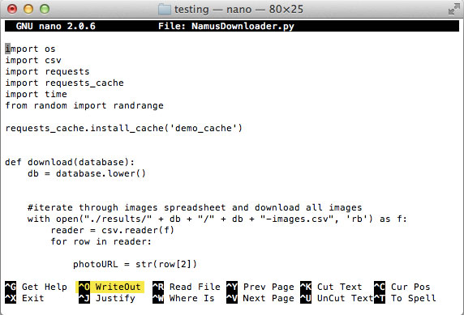

NICAR 2015 was fantastic.
The following is simply a dump of notes from the sessions I attended. I'll give a brief overview of my thoughts on the conference as a whole (and a couple areas of opportunity that stood out to me) in a subsequent post.
Wednesday
Techraking <=10: Bootstrapping the News
This was a pre-conference workshop presented by my lovely CIR coworkers. The goal was to get the participants' computers set up with a VM running Xubuntu 14.04, complete with all the goodies anyone might need for other hands-on sessions. After getting the machines set up, the class was mostly an introduction to the command line. My job was to help anyone who got stuck, which I thought was a little funny because I barely ever use the command line in my day-to-day experience. However, I quickly realized that my sporadic usage over the last couple years was plenty enough to help out with this training. So that felt good. And I was able to drop a little knowledge bomb regarding using nano to edit files: you can use Ctrl + O to save a file without closing it. That'll save your work in progress, which is a small but mighty time-and-headache-saver.
The more you know.
Thursday
From words to pictures: Text analysis and visualization
I enjoyed this session and thought it was a good one to start with. It was an interesting look at visual presentations of text-based data – really good for inspiration. I left wondering how much of it would be useful on mobile devices. Will investigate. Here's the presentation.
The forgotten history of data journalism
It was fun looking at all the firsts in data visualization. Much of the session covered this report about Abraham Lincoln. I thought it would have been cool if the presentation went a little further, maybe into the early stages of computer-based visualisations, maybe something about Muriel Cooper...perhaps that's still too recent.
Uncovering racial and economic divides using data
This session was great, particularly Nikole Hannah-Jones' portion of it. She presented her investigation of the resegregation that occurced after many states' desegregation orders expired. I'd like to see a project along the same lines specificaly for Omaha, which was released from a desegregation order in 1984 and is becoming more and more segregated.
Space journalism: Using satellite imagery for data projects
I missed Brian's session at MozFest, so I was really happy to see it at NICAR. Here's the info:
- GitHub repo from speaker Brian Jacobs
- Presentation from speaker Al Shaw
- Presentation from Brian T. Jacobs
Humanizing numbers
This was a great session about the who and the why behind visualizing data. Katie Parks' projects were some of my favorites – they're great examples of alternative ways to display information. I particularly loved the concept behind the 2015 Hunger Report – how the interesting story is in the data that's missing rather than the data that's available. The photo treatment in that story is pretty awesome too. Overall, I liked how this session focused on how to identify a human-centric story rather than how, technically, to create a graphic.
Fellowship Meetup
The 2015 cohort met up to discuss our experiences so far. It's always nice to hear from everybody. Afterwards, we attended the Knight Foundation happy hour.
Friday
Visual journalism for tiny news desks
This was a session full of things to consider when working in a small newsroom. The audience had some good questions and feedback, including how to avoid performance issues with Google Sheets-powered graphics, and how to consider mobile when developing interactives on the cheap.
- To avoid performance problems with Google Sheets, write a script to export a snapshot of the data from Google at a specified interval. Don't rely on the live feed from Google – because if your doc goes down, so does your graphic.
- Quick ways to account for mobile are to 1) always provide data in an alternate format that's more accessible (like a table) and 2) export your graphics so the user doesn't have to run all the javascript to generate the graphic on the fly.
Jobs and career straight-talk: For (and by) young'uns
I very awkwardly got myself signed up to mentor j-students during this session. (Thanks, Jeremy Merrill, for being gracious!) I thought I might have a unique perspective, considering that I found my way to an awesome newsroom in a relatively unconventional way. Perhaps I'll elaborate on the things I hoped to share with journalism's youngins in another post.
Anyway, the session ended up being more "Q&A with the panelists" and less "small group discussion with the mentors" than I was expecting, but it was still really interesting to hear what other mentors has to say about their own experiences getting to where they are today. At points the conversation devolved into a debate about whether or not grad school is necessary, and another debate about whether or not it was hard to find a job after graduating. In both those conversations, I thought the people who landed their dream job with ease, right out of undergrad, were a little insensitive to everyone else. I mean, I'm glad they're so talented that all the pieces fell into place for them, but that's pretty rare – so it'd be good to at least acknowledge that other people have had different experiences. And I don't mean that in a bitter way at all (I have been quite privileged myself), I'm just well aware that things don't always work out and opportunities aren't available to everyone equally, so it's not accurate or right to expect things to come as easily to others as they did to you. If that makes sense.
Using abstraction to gain knowledge from numbers
This is probably the session where I absorbed the most. I had never heard data abstraction explained in such a concise way, which was awesome. Here are a couple quick takeaways, just for kicks:
- To show difference between two metrics: Consider plotting the difference itself instead of plotting two lines on a chart
- To show long-term trends: Averages are good, smoothing is better, but plotting the change in trend over time is even better.
- Use a cycle plot to show long-term, cyclical data
- To illustrate change in spatial data: Use a slope graph instead of a map
- Presentation from Robert Simmon
Lightning Talks
I enjoyed the lightning talks, particularly the bit about the NYTimes' crazy-awesome dataviz tool, Mr. Chartmaker. They have done it. I worked on a similar project with a previous employer, and it was nowhere near as comprehensive or user friendly. Gives us all something to work towards.
Saturday
Design/Viz: What to do, and what not to do
This session was pretty standard and had good advice, which you can read about here.
During the Q&A portion of the event, an audience member asked a question about accessibility and mobile performance, since most of the examples from the presentation were fairly heavy desktop-sized visualizations. The answer from one of the presenters was less than satisfactory: They don't worry accessibility for news applications because they don't think it's worth it.
I disagree with that stance. Accessibility and mobile performance are becoming more and more important, especially as mobile audiences grow and global web accessibility legislation becomes more prominent. News organizations, as entities dedicated to informing the public, need to be conscious of the implicit biases that come from inaccessible content. Ignoring accessibility limits the reach of your reporting and discriminates against a not insignificant number of people. I'm not arguing that people should avoid experimentation with modern techniques or large-scale projects – I just think it's increasingly important to provide alternative means to access information...I'll talk more about this later. Aaron Williams and I may submit a session proposal about this topic for SRCCON.
Sensor journalism: Buzz or BS?
A fun session that was spoiled by an overtly sexist (and entirely avoidable) question during the Q&A.
Making data-informed design decisions
I loved this session. Using Google Analytics for multivariate testing is a thing I've been very interested in but have never had a chance to implement. Here are some key takeaways from the NPR's analysis:
- Users don’t need share buttons
- Use a “care question” to help encourage users to take action after consuming a story.
- Users are more likely to take action if presented with a yes or no question asking them how the story made them feel.
- For NPR, the care question made a huge difference in their conversion rates (significantly more users clicked on a button to donate to NPR)
- PowerPoint from Tyler Fisher & Josh Kadis
For a great read on the methodology behind NPR's multivariate testing, check out this piece, cowritten by my fellow Fellow Livia Labate.
Web Inspector for Complex Scrapes
I had a great time during this session, which was presented by the wonderful Eric Sagara. It was all about how to reverse engineer awful ASP.NET and Flash-based web applications in order to scrape the data from them. This was a lot of fun for me because I've spent many years building awful .NET and Flash/Flex apps. It was super fun to approach it from the other side. Plus there was a bit of a competition – who could find the data on a certain website first – and I was happy to remind the class that if you can't find any data in the HTTP requests, look for it in the HTML source. It's probably embeded in a <script> block somewhere.
Women of NICAR Dinner
This was lovely. I didn't manage to talk to everyone I had hoped to – but Linda, Livia, Kavya, Tara and I had some great conversation!
Sunday
Game of life: Data from day one to the day you die
This was somehow my first session about generating story ideas. It was fun.
Deep dives
Looking at a few examples of data-driven news apps. Here's a tipsheet.
Mining searchable databases for stories
I thought this sessions was really quite useful. I do wish it would've been a Thursday session though – it was a great introduction to what people actually mean when they say "computer-assisted reporting," which embarrassingly took me too long to really grasp. The session simply walked everyone through some go-to data sources, which are available on the tipsheet.
For notes from all the other sessions at NICAR, check out the tipsheets and links.